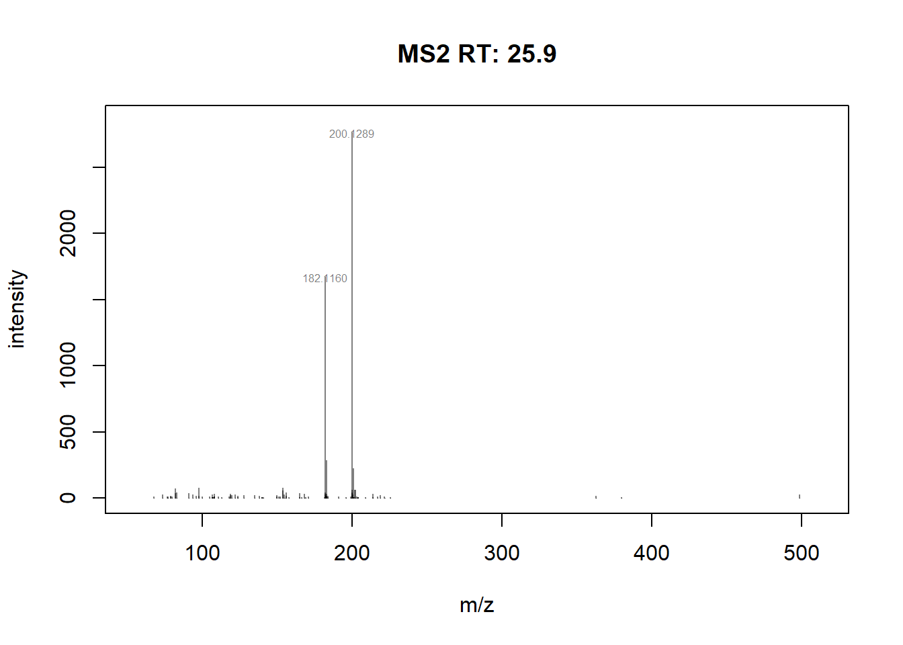

if (!requireNamespace("BiocManager", quietly = TRUE))
install.packages("BiocManager")
BiocManager::install("tidyverse")
BiocManager::install("factoextra")
BiocManager::install("msdata")
BiocManager::install("mzR")
BiocManager::install("rhdf5")
BiocManager::install("rpx")
BiocManager::install("MsCoreUtils")
BiocManager::install("QFeatures")
BiocManager::install("Spectra")
BiocManager::install("ProtGenerics")
BiocManager::install("PSMatch")
BiocManager::install("pheatmap")
BiocManager::install("limma")
BiocManager::install("MSnID")
BiocManager::install("RforMassSpectrometry/SpectraVis")
library(mzR)
library(Spectra)
library(tidyverse)
library(viridis)
library(patchwork)5 Familiarization of Raw Data - IMS-HRMS
https://rformassspectrometry.github.io/book/sec-raw.html
5.0.1 Loading of libraries
#Combined IMS
#mz_ims2 <- "C:\\Users\\vicer06\\OneDrive - Linköpings universitet\\Documents\\01_Projects\\01_VION_HRMS_MSConvert_Processing_2024\\Test_Spectra_Function_R\\Drugstd-200ppb_1_A,3_1-Combined.mzML"
#sp_ims2 <- Spectra(mz_ims2)
#IMS-HRMS data
mz_ims <- "C:\\Users\\vicer06\\OneDrive - Linköpings universitet\\Documents\\01_Projects\\01_VION_HRMS_MSConvert_Processing_2024\\Test_Spectra_Function_R\\Drugstd-200ppb_1_A,3_1.mzML"
sp_ims <- Spectra(mz_ims)
# glimpse(sp_ims) #view structure of file
# length(sp_ims) #number of scans
#
# spectraVariables(sp_ims) #Extract metadata varaibles
#
# sp_ims[["peaksCount"]] #Use metadata variables to extract them
# sp_ims[["ionMobilityDriftTime"]]
# sp_ims[["rtime"]]
# sp_ims[["msLevel"]]
# #or can use
# rtime(sp_ims)
# scanIndex(sp_ims)
# msLevel(sp_ims)
#
# spectraData(sp_ims) #Extract all metadata
#
# raw_data_ims <- peaksData(sp_ims) #Extract list with all raw data
#
# ####for help ?Spectra####
#
# filterAcquisitionNum(sp_ims, n=2000:2001) #filter for scan 2000-2001 in sp_ims
#
# filterIntensity(
# sp_ims,
# intensity = c(10000, Inf)#,
# #msLevel. = uniqueMsLevels(sp_ims)
# ) #filter for intensities, removes peaks below 10 000 in intensity
#
# filterMsLevel(sp_ims, msLevel. = 1) #filter for MS levels, here for MS1
#
# filterRt(sp_ims, rt = 1:2, uniqueMsLevels(sp_ims)) #filter for Retention time, here between 1 and 25.0.2 Plot Mass Spectrum
#plotSpectra can bu used to plot the Mass spectrum of a scan. In the raw data (Spectrum("xxx.mzML")), one can find ""peaksVariables" containing "mz" and "intensity", which tells what to use for the plot??
# #Plot Spectra of a scan and displays the m/z with a smaller font size
# plotSpectra(sp_ims[1800], labels = function(z) format(unlist(mz(z))), labelCex=0.5) #MS1
# plotSpectra(sp_ims[1801], labels = function(z) format(unlist(mz(z))), labelCex=0.5) #MS2
#
# plotSpectra(filterAcquisitionNum(sp_ims, n=1800:1801)) #Both MS1 and MS2 at same time
#
#
# plotSpectra(filterMsLevel(sp_ims, msLevel. = 1)[1800], labels = function(z) format(unlist(mz(z))))
# plotSpectra(filterMsLevel(sp_ims, msLevel. = 2)[1800], labels = function(z) format(unlist(mz(z))))
#
# plotSpectraOverlay(filterMsLevel(sp_ims, msLevel. = 1)[1:200]) #overlay the spectran for scan nr1 to nr200 for MS1
#plot scan 24655, and labels the peaks above 500 intensity and smaller font size
plotSpectra(sp_ims[24655], labelCex=0.5,
labels = function(z) {
lbls <- format(mz(z)[[1L]], digits=6)
lbls[intensity(z)[[1L]] <= 500] <- ""
lbls
})
5.0.3 Constructing a TIC of the data
################### TIC MS1 ##############################
# sp_ims_ms1 <- filterMsLevel(sp_ims, msLevel. = 1) #filter for MS levels, here for MS1
#
# mz_ms1 <- mz(sp_ims_ms1)
# rtime_ms1 <- rtime(sp_ims_ms1)
# intensity_ms1 <- intensity(sp_ims_ms1)
# scanindex_ms1 <- scanIndex(sp_ims_ms1)
#### Sum intensities for each scan ####
# # Initialize an empty vector to store the sum of intensities
# sum_intensity_ms1 <- numeric(length(scanindex_ms1))
# # Iterate over each scan time
# for (i in seq_along(scanindex_ms1)) {
# # Sum the intensity values for the current scan time
# sum_intensity_ms1[i] <- sum(intensity_ms1[[i]])
# }
#
# ## ionCount(sp_ims) sums the intensities for each scan
#
#
# #Plot the summed intensities against the retention times
# with(spectraData(sp_ims_ms1),
# plot(rtime_ms1, sum_intensity_ms1, type="l"))
# abline(v = rtime(sp_ims_ms1)[24455], col = "red")
#### Sum intensities for each RT ####
# unique_rt_ms1 <- unique(rtime_ms1)
# # Initialize an empty vector to store the sum of intensities
# sum2_intensity_ms1 <- numeric(length(unique_rt_ms1))
# # Iterate over each unique scan time
# for (i in seq_along(unique_rt_ms1)) {
# # Find the index of the current scan time in the original data
# idx_ms1 <- which(rtime_ms1 == unique_rt_ms1[i])
# # Sum the intensity values for the scans with the current scan time
# sum2_intensity_ms1[i] <- sum(unlist(intensity_ms1[idx_ms1]))
# }
# #Plot the summed intensities against the retention times
# with(spectraData(sp_ims_ms1),
# plot(unique_rt_ms1/60, sum2_intensity_ms1, type="l",
# xlab="RT", ylab= "Summed Intensities",
# main = "Sum Intensties MS1",
# xlim=c(0.3,8.4)))
######overlaying of msdial TIC and MS1 TIC
# plot(unique_rt_ms1/60, sum2_intensity_ms1, type="l")
# lines(msdial$RETENTIONTIME, msdial$INTENSITY, col="red")
############################ TIC all MS #####################################
#Saves m/z, RT, Intensity, and scanIndex as new objects
mz <- mz(sp_ims) #not needed for tic
scanindex <- scanIndex(sp_ims) #not needed for tic
rtime <- rtime(sp_ims)
intensity <- intensity(sp_ims)
unique_rt <- unique(rtime) #Finds the uniques retention times since the same RT exists for multiple scans
# Create an empty vector to store the sum of intensities
sum2_intensity <- numeric(length(unique_rt))
# Iterate over each unique scan time
for (i in seq_along(unique_rt)) {
# Find the index of the current scan time in the original data
idx <- which(rtime == unique_rt[i])
# Sum the intensity values for the scans with the current scan time
sum2_intensity[i] <- sum(unlist(intensity[idx]))
}
#Plot the retention times against the summed intensities
with(spectraData(sp_ims),
plot(unique_rt/60, sum2_intensity, type="l",
xlab="RT [min]", ylab= "Summed Intensities",
main = "TIC",
xlim=c(0.3,8.4),
ylim=c(0,3.0e6)))
abline(v = rtime(sp_ims)[267139]/60, col = "red") #adds red line for scan 267139max(sum2_intensity) #find maximum intensity in TIC[1] 1775374#plots spectrum for scan 267139
plotSpectra(sp_ims[267139], labelCex=0.6,
labels = function(z) {
lbls <- format(mz(z)[[1L]], digits=6)
lbls[intensity(z)[[1L]] <= 500] <- ""
lbls
})max(intensity[267139]) #find maximum intensity at scan 267139[1] 1173Comparion of TIC of drug-mixture (200 ppb, old-settings) with other softwares:
TIC MS1MS2 - R code (time ⁓ 56 + 46 sec)
SeeMS - Higher intensities (time ⁓ 50sec)
MS-DIAL (first needs to process the file, then can open TIC, time ⁓ 10 min )
Overlaying TIC MS1 (black) and TIC MSDIAL (red)
ToppView (time ⁓ 1.22 min)
##Drift time Summed inteisities
intensity <- intensity(sp_ims)
dtime <- sp_ims[["ionMobilityDriftTime"]]
unique_dt <- unique(dtime) #Finds the uniques retention times since the same RT exists for multiple scans
# Create an empty vector to store the sum of intensities
sum3_intensity <- numeric(length(unique_dt))
# Iterate over each unique scan time
for (i in seq_along(unique_dt)) {
# Find the index of the current scan time in the original data
idx <- which(dtime == unique_dt[i])
# Sum the intensity values for the scans with the current scan time
sum3_intensity[i] <- sum(unlist(intensity[idx]))
}
#Plot the retention times against the summed intensities
with(spectraData(sp_ims),
plot(unique_dt, sum3_intensity, type="l",
xlab="DT [ms]", ylab= "Summed Intensities",
main = "Drift Time Summed Intensities"))#######################################################################
#PLOT of Retention time vs Drift time and Intensities
test_intensities <- ionCount(sp_ims)
data <- data.frame(dtime,
rtime ,
test_intensities)
ggplot(data, aes(x=rtime/60, y=dtime))+
geom_point(aes(color=test_intensities))+
scale_color_viridis(discrete=FALSE)############# To arrange RT VS DT plot with the RT and DT TIC ###########
gg <- ggplot(data, aes(x=rtime/60, y=dtime))+
geom_point(aes(color=test_intensities))+
scale_color_viridis(discrete=FALSE)+
theme_minimal()+
theme()
#make data fram of TIC to be abel to use ggplot
d1 <- data.frame(unique_rt, sum2_intensity)
d2 <- data.frame(unique_dt, sum3_intensity)
g1 <- ggplot(d1, aes(x=unique_rt/60, y=sum2_intensity))+
geom_line()+
theme_minimal()+
theme(axis.text.x=element_blank(),
axis.ticks.x=element_blank(),
axis.text.y=element_blank(),
axis.ticks.y=element_blank())
g2 <- ggplot(d2, aes(x=unique_dt, y=sum3_intensity))+
geom_line()+
theme_minimal() +
theme(axis.text.x=element_blank(),
axis.ticks.x=element_blank(),
axis.text.y=element_blank(),
axis.ticks.y=element_blank())+
coord_flip()
g3 <- plot_spacer() #blank plot to be used in upper right corner
(g1 / gg) | (g3 / g2) #arrange the plots with patchwork-package##### RT vs DT MS1 #################
sp_ims_ms1 <- filterMsLevel(sp_ims, msLevel. = 1) #filter for MS levels, here for MS1
dtime_ms1 <- sp_ims_ms1[["ionMobilityDriftTime"]]
rtime_ms1 <- rtime(sp_ims_ms1)
scan_sum_intensities_ms1 <- ionCount(sp_ims_ms1)
dt_rt_int <- data.frame(dtime_ms1,
rtime_ms1,
scan_sum_intensities_ms1)
ggplot(dt_rt_int, aes(x=rtime_ms1/60, y=dtime_ms1))+
geom_point(aes(color=scan_sum_intensities_ms1))+
scale_color_viridis(discrete=FALSE)#################### not working ################################################
# mz_ms1 <- mz(sp_ims_ms1)
# intensity_ms1 <- intensity(sp_ims_ms1)
#
# mz_ms1_unlist <- unlist(mz_ms1)
# int_ms1_unlist <- unlist(intensity_ms1)
# dt_rep_ms1 <- rep(unlist(dtime_ms1), lengths(mz_ms1))
#
# data2 <- data.frame(dt_rep_ms1,
# mz_ms1_unlist,
# int_ms1_unlist)
# ggplot(data2, aes(x=mz_ms1_unlist, y=dt_rep_ms1))+
# geom_point(aes(color=int_ms1_unlist))+
# scale_color_viridis(discrete=FALSE)
#
# ## Attempting to make plot of mz vs dt with intensities
# test_intens2 <- unlist(intensity)
# test_mz2 <- unlist(mz)
#
# dt_rep <- rep(unlist(dtime), lengths(mz))
#
# data2 <- data.frame(dt_rep,
# test_mz2,
# test_intens2)
# ggplot(data2, aes(x=test_mz2, y=dt_rep))+
# geom_point(aes(color=test_intens2))+
# scale_color_viridis(discrete=FALSE)
#
#
# test_mz2
# dtime5.0.4 XIC of the data
#####
# # Plot using ggplot2
# ggplot(data, aes(x = dtime, y = rtime, color = intensity)) +
# geom_point() +
# scale_color_gradient(low = "blue", high = "red", na.value = "black") +
# labs(x = "DTime", y = "RTime", color = "Intensity") +
# theme_minimal()
#
#
#
# test <- filterMzRange(sp_ims, c(200.128, 200.129))
#
# test_rt <- rtime(test)
#
# test <- filterMzValues(sp_ims, c(200.128, 200.129))
# test <- combinePeaks(sp_ims, mz = c(200.12, 200.13))
#
# test <- filterMzValues(sp_ims, mz = c(103, 104), tolerance = 0.3)
#
# chromatogram(sp_ims, mz = 200.1)
#
#
#
# test_rt <- rtime(test)
# test_intensity <- intensity(test)
#
# # Plot the extracted ion chromatogram (XIC)
# with(spectraData(test),
# plot(test_rt, test_intensity, type = "l")
# )
#
# mz(test)
#
#
# test <- containsMz(
# sp_ims,
# mz = 200.128,
# tolerance = 0.2,
# ppm = 10,
# which = c("any", "all"),
# BPPARAM = bpparam()
# )
#
# plotSpectra(test)
#
# peaksData(sp_ims)
#
# plotSpectra(filterMzValues(sp_ims, c(200.128, 200.129)))
#
#
# plotSpectra(sp_ims, xlim = c(521.2, 522.5))5.0.5 Import more than one file at a time
#import data from folder "Test_Spectra_Function_R" that contains the pattern "Drugstd-200ppb_1_A,3_1", hence data with IMS and combined IMS-dimension are importet
#takes some time to run these
#fls <- dir(path = "C:\\Users\\vicer06\\OneDrive - Linköpings universitet\\Documents\\01_Projects\\01_VION_HRMS_MSConvert_Processing_2024\\Test_Spectra_Function_R", pattern="Drugstd-200ppb_1_A,3_1", full.names = TRUE)
#fls2 <- Spectra(fls)
#table(dataOrigin(fls2)) #show which files been imported
#imports all mzML files in the folder
#fls <- dir(path = "C:\\Users\\vicer06\\OneDrive - Linköpings universitet\\Documents\\01_Projects\\01_VION_HRMS_MSConvert_Processing_2024\\Test_Spectra_Function_R", full.names = TRUE)
#fls2 <- Spectra(fls)
#table(dataOrigin(fls2))#Backend
#MsBackenedMzR: default, relies on MzR package to read MS data
#MsBackenedMemry: full MS data stored within object (in-memory) to guarantee high performance but on the other hand has higher memory footprint if many mass peaks in specrum
#setBackend(fls2, MsBackendMemory())